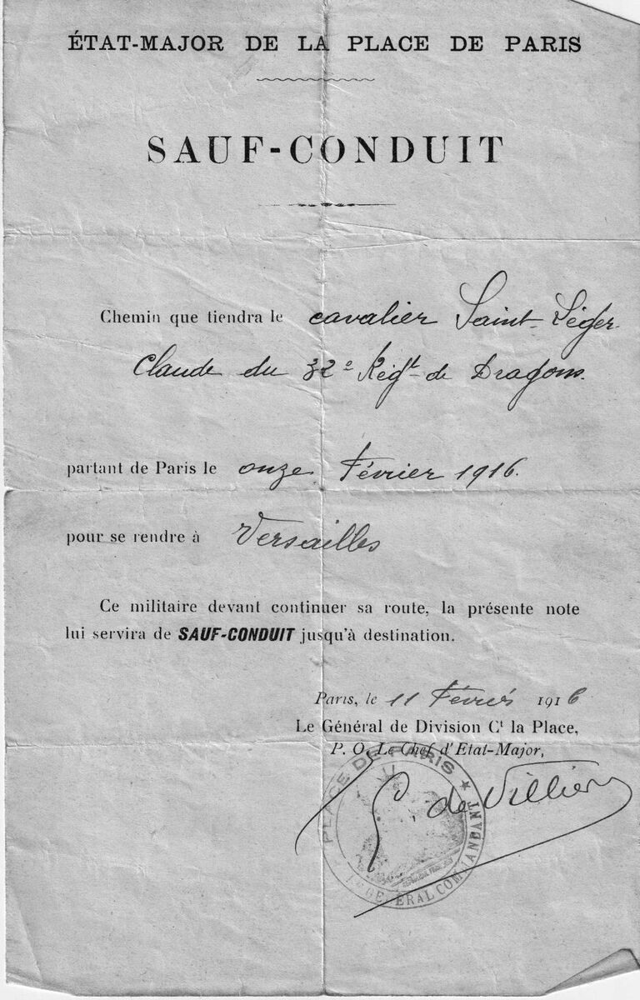

Claude Adolphe Georges Saint-Léger (1897-1944) s’est engagé volontairement au 32e régiment de dragons le 20 octobre 1915, un mois après être rentré de Lille occupée. En février 1916 il n’a pas encore vu le front : il est au dépôt, et il n’y montera qu’en mai. Le 11 février, il est à Paris en permission de quarante-huit heures, descendu au Grand Hôtel, boulevard des Capucines, d’où il écrit à Pat qu’on lui a accordé ce repos après un examen. Le même jour, l’état-major de la place de Paris lui délivre ce sauf-conduit pour rentrer à Versailles. Une feuille de route sans éclat, qui donne pourtant son grade et date sa permission.
Le contexte
Un militaire isolé qui se déplace sans son unité doit être couvert par un titre. Le sauf-conduit délivré par l’état-major de la place, ici la place de Paris, remplit cet office : il nomme l’homme, son régiment, son point de départ, sa destination, et vaut jusqu’à l’arrivée. La formule imprimée le dit d’ailleurs sans détour, la note lui servira de sauf-conduit jusqu’à destination.
Le changement d’autorité mérite d’être noté. Cinq mois plus tôt, le 22 septembre 1915, Claude circulait encore avec un sauf-conduit du Gouvernement militaire de Paris signé d’un commissaire de police, parce qu’il était civil. Il est désormais soldat, et c’est l’état-major de la place qui le couvre. La pièce est signée par ordre du général de division commandant la Place par son chef d’état-major, C. de Villiers.
Le trajet est court et sans risque, mais le moment ne l’est pas. Dix jours après cette permission s’ouvre la bataille de Verdun, le 21 février 1916. La cavalerie, elle, attend : depuis la stabilisation du front, les régiments de dragons sont pour l’essentiel tenus en réserve ou employés à pied, et un jeune engagé passe de longs mois au dépôt avant de rejoindre les escadrons. Claude n’arrivera aux armées que le 21 mai 1916, et sa correspondance du 18 mai le montre encore au dépôt, à s’impatienter d’un départ repoussé. Cette permission de février s’inscrit donc dans une longue attente, celle de l’instruction et des examens, dont la lettre à Pat du même jour porte la trace.
Dates repères
20 octobre 1915 : engagement volontaire pour la durée de la guerre au 32e régiment de dragons, matricule 3420 (état des services).
11 février 1916 : permission de quarante-huit heures à Paris, au Grand Hôtel, et examen récent (lettre à Pat).
11 février 1916 : sauf-conduit de l’état-major de la place de Paris pour se rendre à Versailles (la pièce ci-dessous).
21 février 1916 : ouverture de la bataille de Verdun.
18 mai 1916 : encore au dépôt, départ pour le front retardé (correspondance).
21 mai 1916 : arrivée au corps et aux armées (état des services et carnet de route).
: sauf-conduit de l’état-major de la place de Paris
Délivré à Paris, pour se rendre à Versailles. Signé par ordre du général de division commandant la Place.

Sauf-conduit du 11 février 1916, état-major de la place de Paris. Fonds Saint-Léger.
ÉTAT-MAJOR DE LA PLACE DE PARIS
SAUF-CONDUIT
Chemin que tiendra le cavalier Saint-Léger Claude du 32e Regt de Dragons.
partant de Paris le onze Février 1916.
pour se rendre à Versailles
Ce militaire devant continuer sa route, la présente note lui servira de SAUF-CONDUIT jusqu’à destination.
Paris, le 11 Février 1916
Le Général de Division Ct la Place,
P. O. Le Chef d’Etat-Major,
C. de Villiers
Sources
Sauf-conduit de l’état-major de la place de Paris, 11 février 1916, signé par ordre par le chef d’état-major C. de Villiers. Fac-similé reproduit ci-dessus, fonds Saint-Léger.
Lettre de Claude Saint-Léger à Pat, 11 février 1916, écrite du Grand Hôtel, 12 boulevard des Capucines, dans les correspondances de 1916 du même fonds.
État des services de Claude Saint-Léger, dossier SHD GR 16 P 530758, pour l’engagement du 20 octobre 1915 et l’arrivée aux armées du 21 mai 1916.
Carnet de route militaire, 1916-1917, fonds Saint-Léger.
Sauf-conduit du Gouvernement militaire de Paris et de la préfecture de police, 22 septembre 1915, fonds Saint-Léger, pour comparaison.